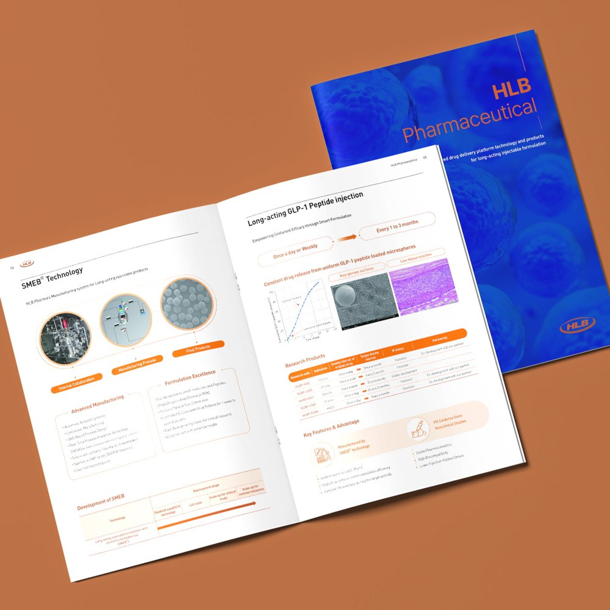
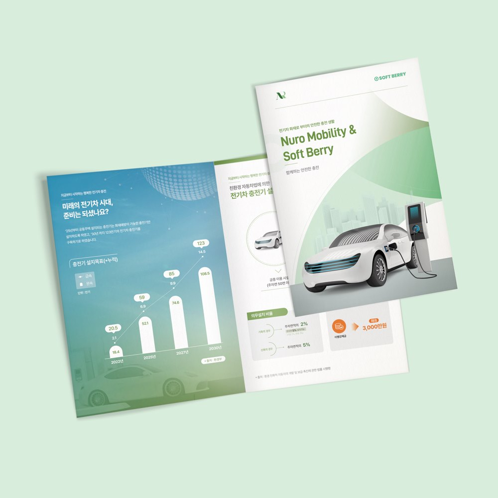
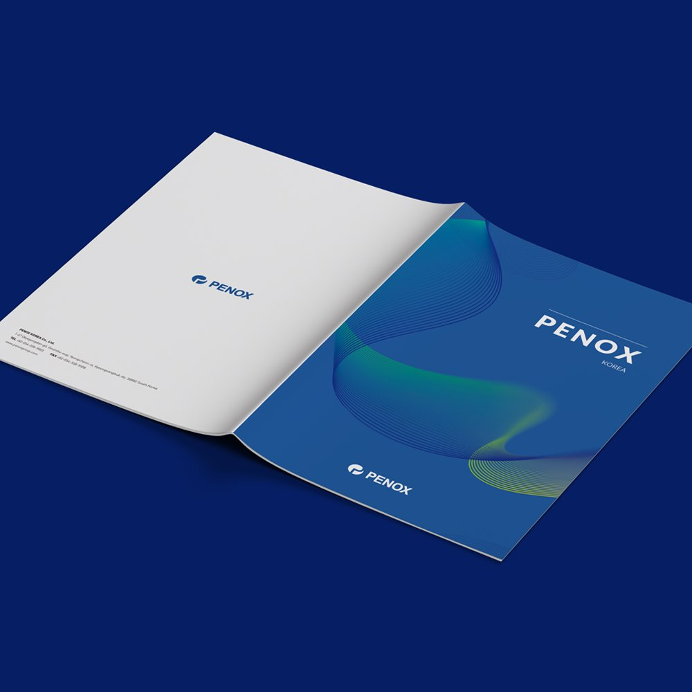
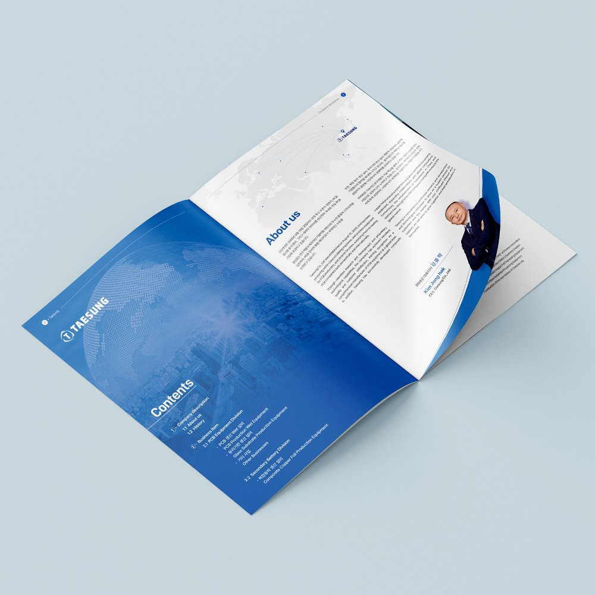
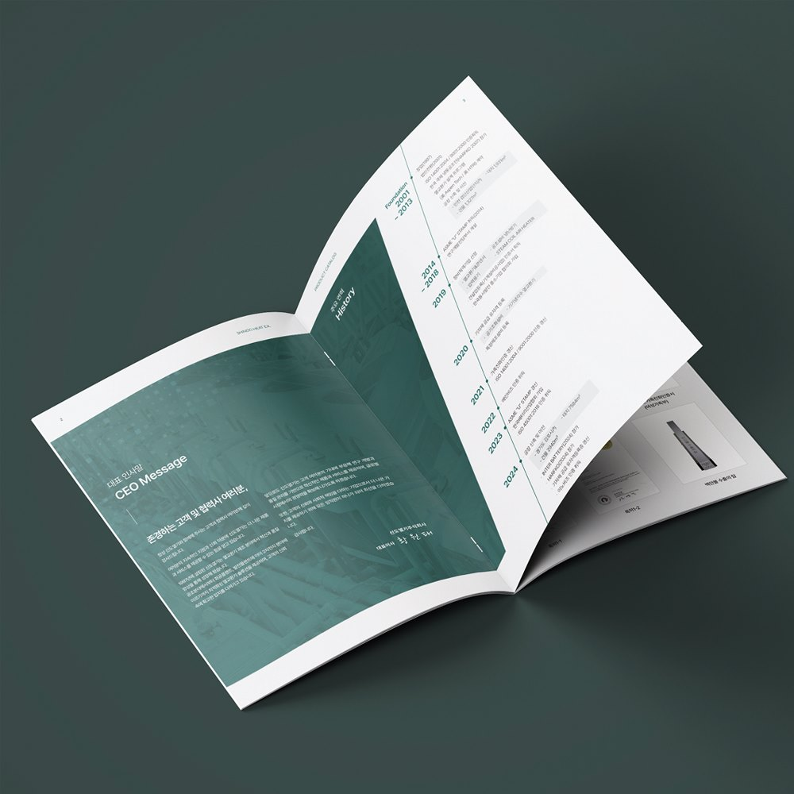
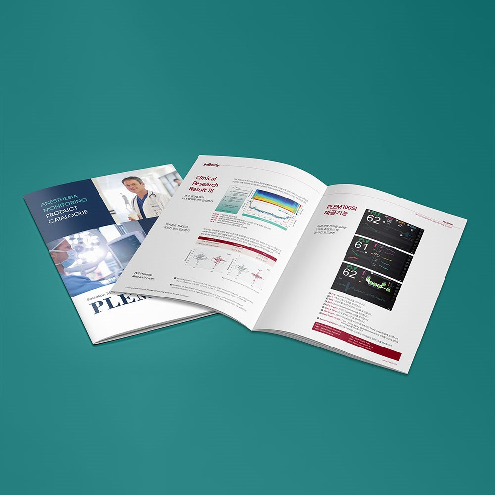
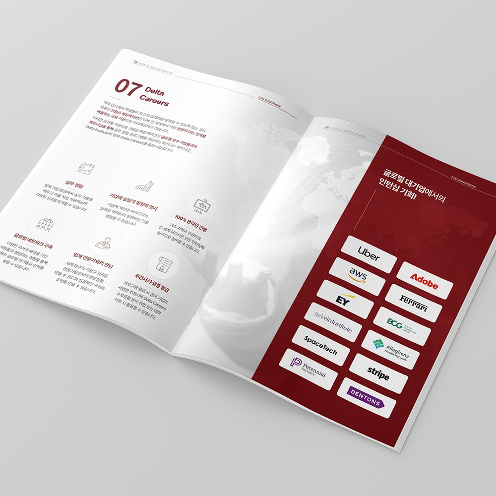
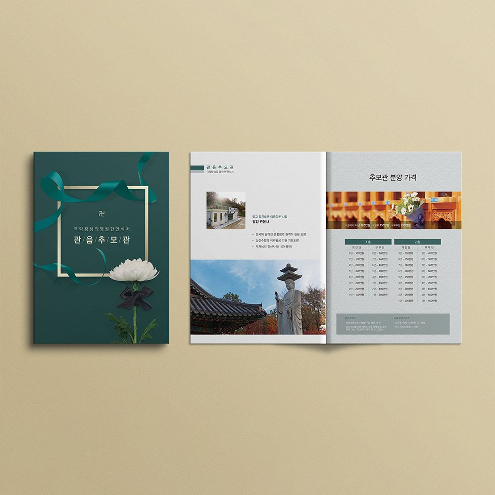

사양표가 제품마다 달라 비교가 안 될 때
모델별 규격 · 성능 · 옵션의 비교 순서를 먼저 정하고 단위와 소수점 자릿수까지 통일합니다.
대전 · 세종 · 충청권 방문 미팅평일 09:00 ~ 18:00
CATALOG
사양표·도면·수치가 많은 제품일수록 카탈로그가 영업을 대신합니다.
대덕산단·테크노밸리 기업의 제품 카탈로그를 편집부터 인쇄까지 한 팀이 만듭니다.

대전지사의 방식
카탈로그의 핵심은 사진이 아니라 사양표입니다.
대전 기업의 카탈로그는 해외 전시회와 수출 상담에 쓰이는 경우가 많습니다.
이런 경우
모델별 규격 · 성능 · 옵션의 비교 순서를 먼저 정하고 단위와 소수점 자릿수까지 통일합니다.
국문판을 만들면서 영문 · 중문 병기 여부를 함께 정해 같은 일정으로 납품합니다.
바뀐 제품과 사양을 먼저 정리한 뒤 구조를 유지할지 새로 짤지 결정합니다. 사진 · 도면 재사용으로 비용을 줄입니다.
제작 항목
필요한 항목만 골라 의뢰하셔도 좋습니다.
CATALOG
제품 라인업과 사양표를 비교하기 쉬운 구조로 편집합니다.
제품 촬영과 도면 정리, 인쇄까지 한 팀에서 진행합니다.

CATALOG
기술 원리와 적용 사례를 도해로 풀어 기업의 역량을 함께 보여줍니다.
연구소·기술기업의 제안 자료로 바로 쓸 수 있게 구성합니다.

CATALOG
해외 전시회·수출 상담용 영문판을 국문판과 같은 일정으로 만듭니다.
언어별 글자 길이에 맞춰 레이아웃을 다시 잡습니다.
Use case
제품이 여러 개일 때 씁니다. 브로슈어가 회사를 말한다면, 카탈로그는 제품을 말합니다.
모델별 사양표를 같은 틀로 반복 배치합니다.
부스에서 바이어에게 건네는 자료입니다.
가격표와 함께 영업 현장에서 사용합니다.
번역 부서 직접 운영으로 언어별 판을 함께 만듭니다.
Binding
제품 수가 늘수록 면수가 늘고, 면수가 제본 방식을 결정합니다.
제품 수가 많지 않을 때 가장 많이 쓰입니다. 펼치면 평평해져 사양표를 양면에 걸쳐 넓게 쓸 수 있습니다.
제품이 많아 페이지가 두꺼워질 때 사용합니다. 책등에 제품군과 발행 연도를 넣어 관리하기 좋습니다.
신제품이 자주 추가되는 경우에 씁니다. 해당 페이지만 새로 찍어 갈아 끼울 수 있어 전체 재인쇄가 필요 없습니다.
Size
사양표가 많으면 A4, 들고 다니며 보여줄 자료면 A5가 적합합니다.
| 판형 | 완성 사이즈 | 주로 쓰는 곳 |
|---|---|---|
| A4 | 21.0 × 29.7cm | 사양표 · 도면이 많은 산업재 카탈로그 |
| 국배판 | 21.0 × 27.0cm | 종합 카탈로그, 정기 발간물 |
| A5 | 14.8 × 21.0cm | 휴대용 영업 자료, 전시 배포 |
| 정사각 | 21.0 × 21.0cm | 소비재 · 인테리어 · 패션 제품 |
Paper
카탈로그는 제품 사진의 색이 생명입니다. 지종 선택이 결과를 크게 바꿉니다.
제품 사진 색이
가장 진하게 나옴
반사가 적어
사양표가 잘 읽힘
코팅이 없어
필기가 잘됨
부드러운 표면
감성 제품에 적합
기본 조합은 표지 200~250g / 내지 120~150g입니다.
내지용
면수 많을 때
내지 기본
사진이 선명함
표지 기본
안정적인 힘
표지 고급형
두꺼운 두께감
지문이 덜 남아
오래 돌려보는 자료
제품 사진이
진하고 선명해짐
특정 부분만 광택
주력 제품 강조
제품군별 탭 재단
찾아보기 편함
진행 순서
제품 목록·사양·사진 준비 상태와
납품 일정을 확인합니다.
페이지 플랜과 판형·수량을 정하고
견적과 일정을 안내합니다.
표지와 대표 제품 페이지를 먼저 보여드리고
확정 후 전체를 디자인합니다.
사양 수치와 오탈자를 검수하고
수정을 반영합니다.
자체 인쇄소에서 인쇄·제본 후
기한에 맞춰 납품합니다.
제작 사례





자주 묻는 질문
대전에서 카탈로그를 의뢰하실 때 가장 많이 받는 질문입니다.
16~32페이지 기준으로 디자인 2주, 인쇄 1주 정도로 약 3주가 걸립니다. 제품 촬영이 포함되면 1주가 더 필요하고, 전시회 일정이 있으면 그 날짜에서 역산해 일정을 잡아 드립니다.
네. 제품 촬영은 자체 촬영팀이 진행하고, CAD 도면이나 손그림은 디자인 단계에서 벡터 도해로 다시 그립니다. 사양표는 엑셀로만 주셔도 편집이 가능합니다.
300부 이하는 디지털 인쇄로 판비 없이 진행하고, 500부 이상은 옵셋 인쇄로 넘어가야 부당 단가가 내려갑니다. 수량별 견적을 두 가지로 비교해 드립니다.
가능합니다. 완성된 인쇄용 PDF를 주시면 용지·코팅·제본 사양을 확인해 자체 인쇄소에서 인쇄합니다. 인쇄 전 색 교정본을 먼저 보내드리기 때문에 화면과 다른 색으로 나오는 일이 없습니다.
기존 판을 기준으로 바뀐 제품과 사양을 먼저 정리한 뒤, 구조를 유지할지 새로 짤지 결정합니다. 사진과 도면을 재사용할 수 있으면 제작비와 기간이 줄어듭니다.
네. 대덕산단·테크노밸리·둔산 등 대전 전 지역과 세종·청주 기업은 필요한 날 방문해 용지·후가공 실물 샘플을 보며 상담드립니다. 전화 1600-9487로 요청해 주세요.
함께 보는 서비스
FIRST DESIGN DAEJEON
기획 · 디자인 · 번역 · 촬영 · 인쇄를 한 팀이 진행합니다.
원고가 정리되기 전이라도 목차와 일정부터 함께 잡아 드립니다.